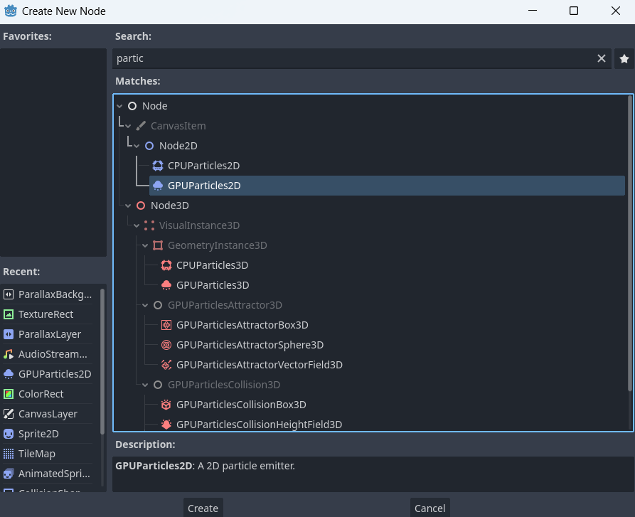
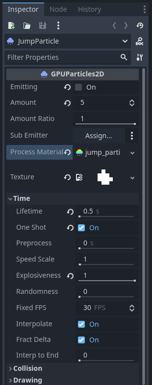

IMPORTANT! This module requires the Juice Setup module to be completed first!
A commonplace in modern games, particles are small temporary visual effects. Some examples are things like dust, smoke and footprints. Due to the high amount of them in games, they are handled in very different (and more efficient) ways than most objects, usually through something called an emitter. On this page we will explore particles and create several varieties of them to add more juice to our game.
One of the key actions in our game is jumping. As such it is always good to make the act of jumping as rewarding as possible through juice, and in this case, particles. To get started create a new scene. For the root node create a new GPUParticles2D node. Rename it to JumpParticle.
Next we need to get our particle and textures themselves. Locate and import the jump particle and dust sprite from the Particles folder in your VGDC-2025 Assets folder.
If you are not taking this course in person, you can download the assets Here
Go ahead and select the JumpParticle node. Drag your jump_particle asset you imported from the file system into the inspector as the Process Material, then repeat the same with the dust sprite as the Texture. The JumpParticle node has many options (and the jump_particle asset has even more.) To ease any confusion, here is the setup I am using for the JumpParticle scene.
There is a lot happening here, so let me go through what each of the changed properties are doing.
There are a whole lot more particles can do. If you want to learn more you can check out the documentation on them Here
That's the Jump Particle scene done. Go ahead and save the scene. Though of course it does not do anything on it's own. To be able to have the particles appear when the player jumps let's go to our player script. in the reference variables we will add a new export variable called jump_particle with the type of PackedScene like so:
# Reference Variables
var gravity = ProjectSettings.get_setting("physics/2d/default_gravity")
@onready var sprite = $AnimatedSprite2D
@export var jump_particle : PackedSceneNext we need to assign the Jump Particle scene to the new variable. Select the player node and then drag the jump particle scene from the file system into the jump_particle property in the inspector. Once that is onde we can have the player create a Jump Particle scene each time they jump. Navigate to the jump_effects function in the player script and add the following code:
func jump_effects():
var p = jump_particle.instantiate()
p.emitting = true
p.global_position = global_position + Vector2(0,8)
get_parent().add_child(p)Once again there is quite a bit here. Let's break it down.
And that is the jump particles done.
As the opposite of jumping, we want our landings to be just as impactful as the jump itself. To get started we don't want to just make a new scene. I just so happened to make sure that the landing particles and jump particles are the same other than their process material, so we can duplicate our jump particle scene as the base. Then, rename the root node the LandParticle and rename the scene as well. Finally, import the land particle asset from the Particles folder in your VGDC-2024 Assets folder. Drag it from the file system to the LandParticle's Process Material property.
Just like the jump particle you can mess around with the values to get the look you want.
Next go to the player scene again. In the player script we will create a new export variable called land_particle in our reference variables.
# Reference Variables
var gravity = ProjectSettings.get_setting("physics/2d/default_gravity")
@onready var sprite = $AnimatedSprite2D
@export var jump_particle : PackedScene
@export var land_particle : PackedSceneJust like the jump particle, drag the land particle scene from the filesystem into the player's inspector as the land_particle property. Next navigate to the land_effects function and add the following code:
func jump_effects():
var p = jump_particle.instantiate()
p.emitting = true
p.global_position = global_position + Vector2(0,8)
p.lifetime = stored_velocity.y * 0.0015
get_parent().add_child(p)The only new part of this particle is scaling the particle's life, or time active, with the player's stored velocity. This makes the particles last shorter the less the player has fallen. And you're done! Go ahead and mess with some values for the particles then move on to another module!